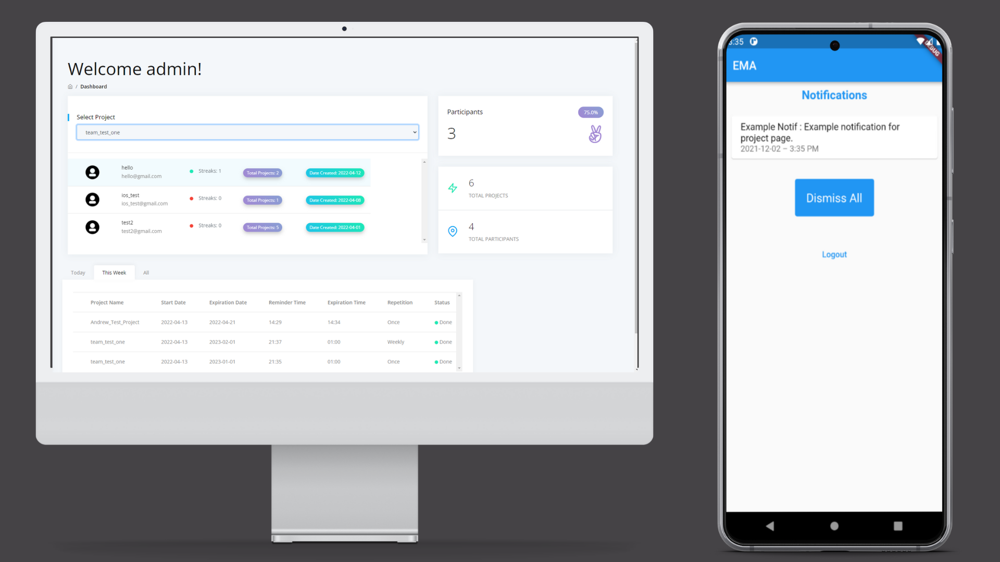

LeafLog
Intuitive plant tracker application built with storyboard and UIKit. Monitor plant growth over time, look up care details, and get watering reminders to keep your houseplants looking their best.

Escape The Grid
Would you believe me if I told you I developed a VR game solely with Mac hardware?
Through Apple's BootCamp for Windows, I was able to develop an Oculus/Unity VR game on my 2017 iMac and 2019 MacBook Pro 16".
This project was completed over two years and required learning various new tools and technologies - all while working with pre-release SDKs and unstable frameworks.
Theia Wayfinding
Augmented reality is commonly used for gaming, multi-purpose utility, and general productivity. Unfortunately, the potential for it to create a more accessible world is often overlooked by graphics rendering or gameplay demos. Developers have made great strides in creating digital platforms and tools that are accessible - but AR is the first technology to directly influence how people interact with the real world. The objective of Theia Wayfinding is simple - increase the confidence and safety of users with visual impairments that are navigating an unknown are.
EMA - Ecological Momentary Assessment
Working in the role as Scrum Master - I led iOS development and tracked progress on sprint tasks and project milestones. The EMA app was created in partnership with Boise State University's Psychology department to run local behavioral assessment studies. Surveys are sent to participants via push notification links to SurveyMonkey or Qualtrics - with in-app daily streak counters and badges awarded for each complete assessment.

Detective Toolkit
Semester-long assignment for an introductory iOS development course. Envisioned a psuedo toolkit application with a target audience of 6-12 years in age. Users are able to browse the web, create a to-do list, view Maps, and analyze images for object recognition. Went beyond requirements of assignment and implemented Core Data as well as a Machine Learning model to save list data and enable image analysis.

Mirror Monsters
Augmented Reality application assignment for a mobile development course. Facial mapping used to apply a 3D filter to the user.